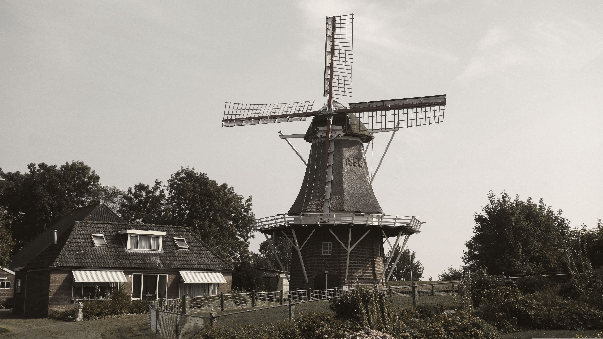

Wie alles begann – Die Geburtsstunde der „Bäckerei Schmidt“

Wilhelm Schmidt gründete die Bäckerei bei einer alten Mühle in der kleinen Stadt Lübbenau. Dort wurden die ersten Brote mit ganz einfacher Ausstattung, aber großen Träumen von unserem damals 26-jährigen Gründer Wilhelm und seiner Frau Alma gebacken.
Im Frühjahr 1948 traf Wilhelm die Entscheidung, seine eigene Bäckerei zu eröffnen. Am 26. Juli 1948 backte er das erste Brot im Namen seiner eigenen Bäckerei „Bäckerei Schmidt“ – im alten gemauerten Steinofen und mit wenigen Zutaten.